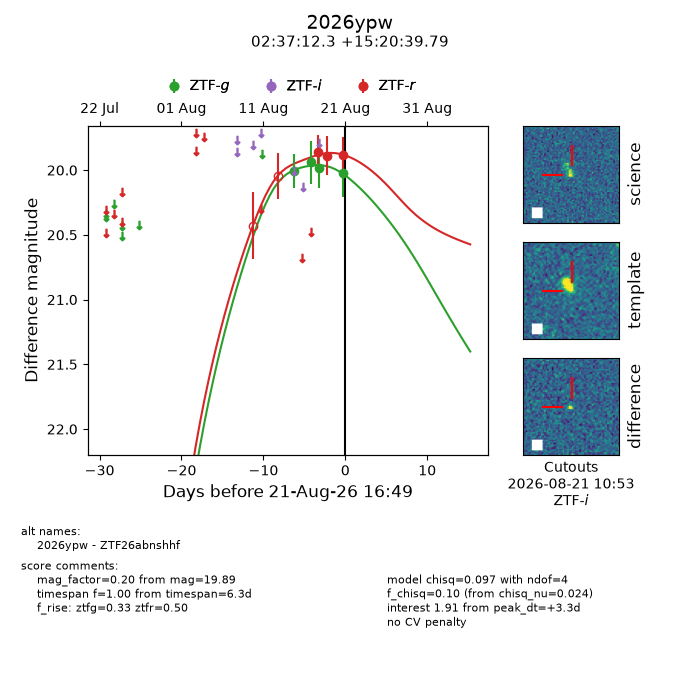
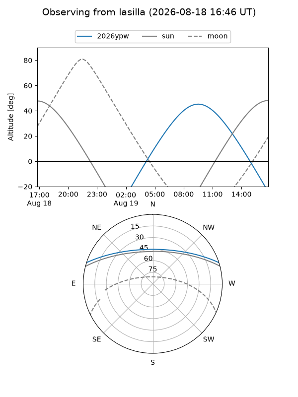
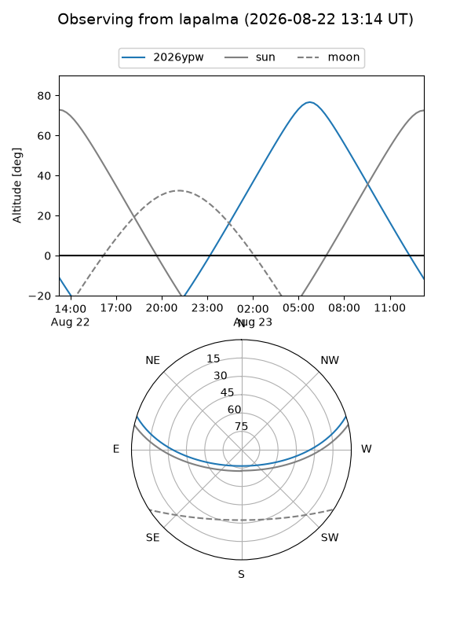
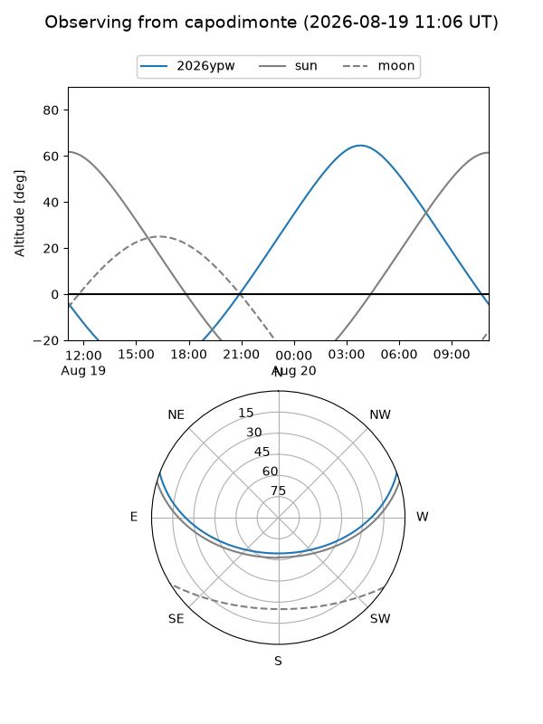
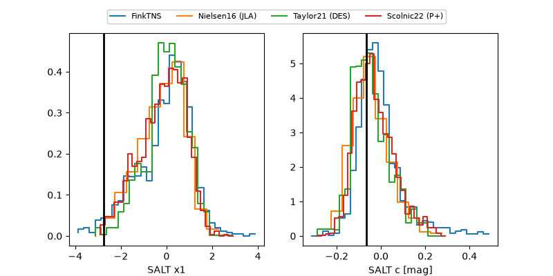

2026ypw
Target 2026ypw at 2026-08-21 16:52
Aliases and brokers:
FINK-ZTF: ztf.fink-portal.org/ZTF26abnshhf
Lasair-ZTF: lasair-ztf.lsst.ac.uk/objects/ZTF26abnshhf
ALeRCE-ZTF: alerce.online/object/ZTF26abnshhf
YSE-PZ: ziggy.ucolick.org/yse/transient_detail/2026ypw
TNS name: wis-tns.org/object/2026ypw
Direct TNS query: direct search
alt names
ZTF26abnshhf (ztf,fink_ztf)
2026ypw (tns,yse)
Coordinates:
equatorial (ra, dec) = 39.3011,+15.34439
equatorial (HMS+DMS) = 02:37:12.26,+15:20:39.79
galactic (l, b) = (157.2428,-40.37714)
Flags:
TNS type: nan
peak dt: +3.3
Photometry:
last ztfg=20.02, ztfr=19.89
4 ztfg, 3 ztfr detections
Lightcurve

Visibility



Additional plots
